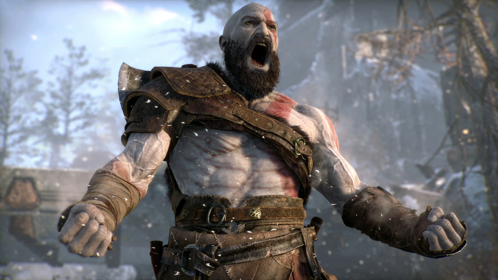
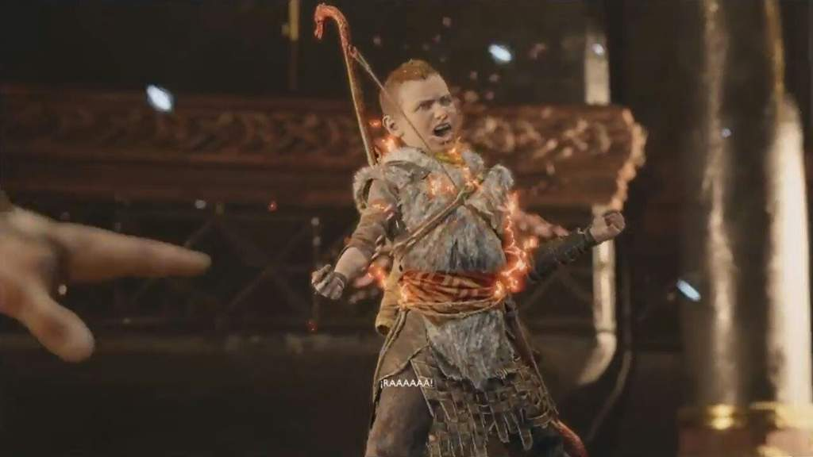

Ira Espartana
 Essa habilidade permite que Kratos desenvolva força e velocidade maiores do que ele tem em seu estado normal. Ele pode ser atualizado com Horns of Bloody Mead, que pode ser encontrado dentro de alguns baús das Norns espalhados por diferentes reinos.

Kratos passou anos tentando controlar sua raiva após cumprir sua vingança contra os deuses gregos. Essa tarefa é a razão pela qual ele viveu pouco com seu filho Atreus, porque todas as manhãs ele saía de casa para controlar seus impulsos e não voltava até a noite. A visita de Baldur, após a morte de sua esposa Faye,
fez com que o espartano fosse forçado a ativar sua ira espartana, a fim de proteger seu filho.
Atreus herdou essa habilidade sem saber. Após o ataque surpresa de Modi, que paralisou Kratos com a energia elétrica de seu martelo, Atreus desbloqueou sua habilidade.
Seu corpo não estava preparado para tamanho poder e ele perdeu a consciência.